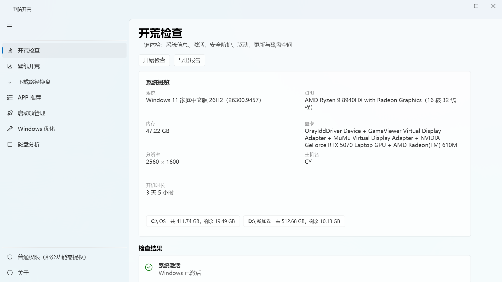

无广告 · 无弹窗 · 无捆绑
软件本身不盈利、不接任何推广。推荐的每一款软件都只走官方渠道，拒绝全家桶。
纯净无广告的 Windows 开荒助手
新电脑到手、重装系统后的第一件事——系统体检、壁纸设置、下载路径换盘、 纯净软件安装——一个绿色单文件全搞定，无广告、无捆绑、不上传任何数据。

不盈利、不推广、不留后门——这三条写进了每一行代码。
软件本身不盈利、不接任何推广。推荐的每一款软件都只走官方渠道，拒绝全家桶。
仅有的联网行为是访问 Bing 壁纸接口与 winget 官方源，除此之外没有任何遥测。
启动项禁用、系统优化全部可在应用内一键恢复；磁盘分析只读展示，绝不自动删文件。
从体检到优化，把「开新机」做成一条完整的动线。
一键体检：系统信息、激活状态、Defender、防火墙、异常驱动、待重启、网络与磁盘——WMI 并行查询，几秒出报告，支持导出 Markdown。
Bing 中国区近一周每日壁纸网格预览，一键下载并设为桌面；支持 5 种填充模式、本地图片与离线缓存。
「下载」文件夹一键迁出系统盘：先迁移文件、最后才改系统指向，中断不产生不一致；浏览器跟随系统自动生效。
25 款精选软件、8 大类目，收录标准只有一条：官方渠道、无捆绑、无广告。已装自动检测，winget 静默批量安装。
Run 键与启动文件夹全枚举、数字签名发布者解析；禁用走任务管理器同款机制——不删原始条目，随时可恢复。
开始菜单推荐、任务栏小组件、广告 ID、锁屏资讯等 9 项一键关闭；按 Win10/11 自动显隐，全部可逆。
目录占用排行 + 最大文件 Top 30；回收站、Temp、Windows.old、更新缓存只展示、不删除，一键在资源管理器定位。
MIT 许可。全部通过官方公开机制（注册表 / StartupApproved / powercfg / winget）完成，无注入、无全局钩子；业务库 72 项单元测试全绿。
Fluent 设计语言，跟随系统明暗主题。点击图片可查看原图。
真实界面录制：体检、壁纸、软件安装的一站式开荒流程。
绿色单文件，免安装、免依赖，拷进 U 盘也能直接用。
个人作品未购买代码签名证书，Windows 对未签名程序会显示此提示，属正常现象。 点「更多信息」→「仍要运行」即可；更省事的做法是右键文件 → 属性 → 勾选「解除锁定」。 软件本身是干净的，建议下载后按上方方法核对 SHA256 确认完整性。
默认以普通权限运行，开荒检查、壁纸、下载路径换盘、APP 推荐、磁盘分析均可正常使用。 仅系统级启动项、关闭遥测等少数操作需要提权——页面内会提示并提供「以管理员身份重启」按钮， 不需要提权的功能绝不要求。
所有修改都通过官方公开机制完成（注册表、StartupApproved、powercfg、winget），并在应用内提供一键恢复。 启动项禁用采用与任务管理器相同的机制，不删除原始条目； 磁盘分析全程只读，绝不自动删除任何文件。
收录标准只有一条：官方渠道、无捆绑安装器、无弹窗广告——宁缺毋滥。 软件清单（apps.json）随源码开源，符合标准的软件欢迎通过 官网反馈页提交收录申请。
不会。仅有的联网行为是访问 Bing 壁纸接口与 winget 官方源， 除此之外没有任何遥测、统计或上报，也不需要注册账号。
支持 Windows 10（1709 及以上）与 Windows 11 的 64 位系统。 为了实现「新机双击即用」，程序自带完整 .NET 运行时（自包含单文件），因此比普通软件大—— 换来的是免安装、免依赖，放到 U 盘里也能直接运行。